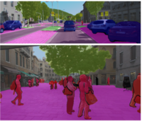
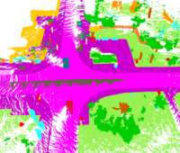
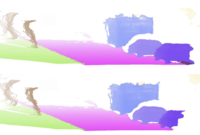

Competitions
For the 6th edition of our Benchmarking Multi-Target Tracking workshop, we are planning to take multi-object tracking and segmentation to the next level. In this edition, we will organize three challenging competitions, for which we require to assign semantic classes and track identities to all pixels in a video or 3D points based either on a monocular video or a LiDAR stream.
Video track

For this track we extended two existing datasets (KITTI and MOTChallenge) with dense, pixel-precise labels in both spatial and temporal domain: KITTI-STEP and MOTChallenge-STEP. For MOTChallenge-STEP, we have extended instance-level annotations of two training and two challenging test sequences of MOTChallenge-MOTS labels and 21 training and 29 test sequences of KITTI-MOTS labels. For more information we refer to our recent paper. The task will be to assign a semantic and unique instance label to every pixel of the video.
LiDAR track

This challenge will be based on the SemanticKITTI dataset, introduced in the context of LiDAR semantic segmentation and panoptic segmentation.
The dataset is densely labeled in the spatial and temporal domain, which makes it a perfect test-bed for our 4D panoptic LiDAR segmentation challenge, as introduced in our recent paper on 4D Panoptic LiDAR segmentation. The task will be to assign a semantic and unique instance label to every 3D LiDAR point.
Video + depth track

This track will be based on recently introduced SemanticKITTI-DVPS dataset, that augments LiDAR-based SemanticKITTI dataset with pixel-precise semantic and instance labels of images, derived from LiDAR labels in a semi-automated manner, providing semantic and depth labels needed for evaluation of joint video panoptic segmentation and monocular depth estimation. In addition to assigning semantic and instance labels, this track requires a depth estimate for every pixel.
For each challenge, we will award the challenge winner and the most innovative entry that our committee will select based on the submitted 4-page abstracts and invite both to give a short talk at our workshop.
We will rank all methods with respect to recently introduced Segmentating and Tracking Quality (STQ) metric, inspired by Higher-Order Tracking Accuracy (HOTA) metric, introduced in the context of vision-based multi-object tracking.
Details will be announced soon!
Organizers + links + pictures go here. At the bottom: logos of organizing unis.